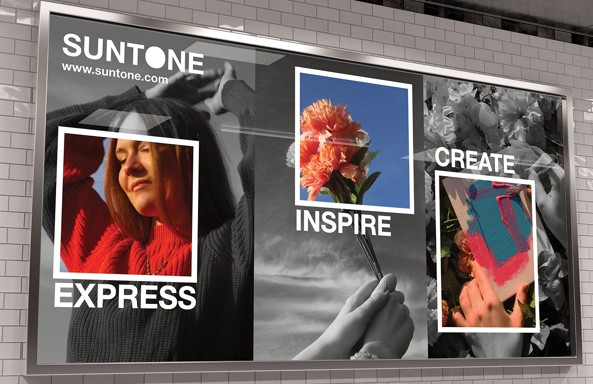
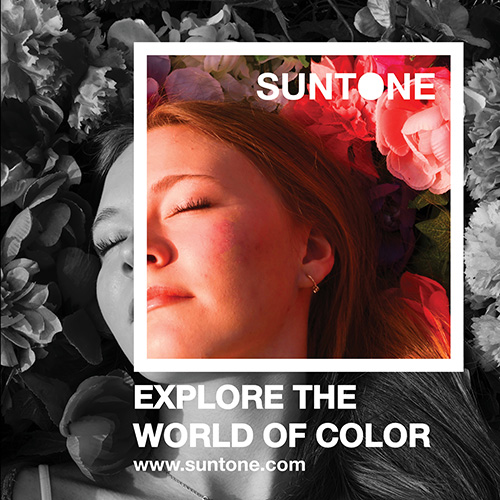

Client: Suntone, Fictitious
Description: A color‑driven brand brought to life through a vibrant outdoor photo shoot and three sizes of video advertisements. The images mix black‑and‑white settings with selective bursts of color, used across a social media post and a billboard design. A bright study in contrast, expression, and some fun promotion through color.
Media and Software: Premiere Pro, Illustrator, Photoshop

